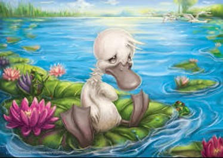

The Reluctant Duck

'Let him alone,' his mother said. 'He isn't doing any harm.'
'Possibly not,' said the duck who bit him, 'but he's too big and strange, and therefore he needs a good whacking.'
The Ugly Duckling, Hans Christian Andersen, 1843
The Ugly Duckling by RosieVangelova on DeviantArt
He heard the others peep as they came through their shells. He could only slump in his. He hadn't brought himself there. It wasn't his doing. He could only wait for something else to happen to him. When the shell did crack above his head, he stepped out as best he could and met the alarmed eyes of his mother. She wasn't a bad mother or a good mother, but had simply hatched the eggs she had been left with. One was his. When a busybody told her to leave it alone because it might be a turkey's, she nodded but didn't unseat herself. She'd put time in on the job and wanted to see the result. You never know. He startled her by exceeding duck norms. He was big in the wrong places. But she still wouldn't give up on her investment and pushed him into the pond to swim with her other newborn. They raved about the landscape, which was understandably more impressive than the inside of an eggshell. Busy with being different, he couldn't get the view in focus. His mother couldn't see it either. Routine had blinded her. The ducklings, sighting the foliage down the lane, said, How wide the world is. She shut them up with her hard knowledge of it that extended to the garden beyond and a field after that. Taking her brood to the duck yard she warned them of its dangers. Two families had come to violence in a squabble over boundaries. That's how short the world is of width, she told her little ones and him, the last hatched, the too big one. She also instructed them to bow down to the hungry dowager marked with a red stripe of nobility. As they marched about learning to turn their toes outward, the big duckling kept his eyes down watching his turn inward.
He heard the others peep as they came through their shells. He could only slump in his. He hadn't brought himself there. It wasn't his doing. He could only wait for something else to happen to him. When the shell did crack above his head, he stepped out as best he could and met the alarmed eyes of his mother.
She wasn't a bad mother or a good mother, but had simply hatched the eggs she had been left with. One was his. When a busybody told her to leave it alone because it might be a turkey's, she nodded but didn't unseat herself. She'd put time in on the job and wanted to see the result. You never know.
He startled her by exceeding duck norms. He was big in the wrong places. But she still wouldn't give up on her investment and pushed him into the pond to swim with her other newborn. They raved about the landscape, which was understandably more impressive than the inside of an eggshell. Busy with being different, he couldn't get the view in focus. His mother couldn't see it either. Routine had blinded her. The ducklings, sighting the foliage down the lane, said, How wide the world is. She shut them up with her hard knowledge of it that extended to the garden beyond and a field after that.
Taking her brood to the duck yard she warned them of its dangers. Two families had come to violence in a squabble over boundaries. That's how short the world is of width, she told her little ones and him, the last hatched, the too big one. She also instructed them to bow down to the hungry dowager marked with a red stripe of nobility. As they marched about learning to turn their toes outward, the big duckling kept his eyes down watching his turn inward.
The two families forgot their differences and came together against the new arrivals. There was no room for them. They would have at least to get rid of the big ugly one. To put their point across, both families pecked and bit him. Even his brothers threatened to sic the cat on him. The girl who spread the feed kicked at him with her boot.
So he set out on his own, dodging birds and beasts that he feared his looks would turn against him. He landed in a marsh full of wild ducks untouched by the established ways of the farmyard. They took note of his ugliness but agreed to ignore it if he didn't try to marry into their family. Copulation, which couldn't have been farther from his mind, came up again when he met two wild geese, both prancing ganders. They told him his hideous appearance would be an asset with some young ladies they knew with a yen for the exotic.
As he pondered how to avoid the encounter, the answer came in rapid fire from the guns of hunters. The ganders pranced no more. When the birddog came to retrieve them, the too-big duckling quailed in fear. But the spaniel, lolling tongue over sharp teeth, took one look at him and returned to its proper business. The big duckling thanked his ugliness and stole away only to wander, after a while, into a storm that blew him this way and that. Defenceless against the wind, he entered a hovel by a door left ajar. It was the realm of an old woman, a hen and a cat.
The old woman's eyes were milky with years and couldn't make out what he looked like. She took him for a puffed up fowl who might lay outsized eggs for her. The cat and the hen managed the premises, serving as her lieutenants. The cat's claim to glory was that it could purr and give off sparks when brushed the wrong way. The hen saw its excellence in the ability to lay eggs one after another like a machine. The two of them spoke of the hovel as their half of the world, the better half.
When the duckling said he thought there might be more than two halves, the hen said he had no right to an opinion unless he could lay an egg. The cat told him to keep his doubts to himself until he learned to purr. Just ask the old woman, they said, she knows all there is to know.
The duckling hesitated to leave the hovel. It was the only place his ugliness had never been mentioned. He feared, however, that it was only because the old woman was near blind, that the hen had an eye only for the next egg and that the cat was oblivious to anything beyond the end of its tail. The world outside its two halves had to be better. He ventured into it.
What he found was winter as before. Suffering it to the marrow, he learned that beauty or the want of it made no difference to the cruel elements. He ended frozen fast in a pond. He wasn't rescued but taken as prey by a farmer who broke up the ice. The farmer gave him to his wife, saying that he was quite large enough for two dinners. When the duckling thawed out in her kitchen, he floundered about and made a thorough mess. The children chased after him, kicking hard, and the wife took the fire tongs to him. He fled through the open door marvelling that none of them had remarked on his ugliness and that his size had been seen as desirable.
Winter still raged. Making his way in pain, he recalled the majestic flight of some large sleek birds. Blazing white, they had passed overhead untroubled by the rules of the farmyard, by family feuds or the personal defects of creatures below them. They flew, undeterred by the cruel weather, towards the sun, making the seasons serve them. But had these handsome, indifferent birds been only something he dreamt? Maybe the vision had come to him back when he slumbered inside the shell of his oversized egg. He couldn't be sure.
On he went in sleet and snow. He kept away from water fearing he would be frozen fast again and have to be rescued by another farmer with a taste for roast fowl, a snarling wife and devilish children. It was then, with the north wind still blowing hard, that he looked up to see a jolly face observing him. The man had the bushy beard of a friend and bid him come out of the cold into the warmth of his cloak. Too weak not to, he complied.
As the duckling warmed himself, his benefactor asked him about his life and troubles. He had a strange way of questioning and listening, seeming to be talking to himself. During their conversation the duckling felt he was no longer the same as he had been before. He was someone in a story shielded from the biting wind and chafing snow. The man, still smiling, bid him adieu and each went his way. The duckling shrugged, and soon found himself in the same winter, bitten by the same wind and chafed by the same snow.
The man had told him that spring was coming and all would be well for barnyard creatures far from home and even better for those that rose in freedom above any landscape. He had looked into the distance over the duckling's head and, smiling, told him he wasn't a duck at all and was only ugly in the shortsighted eyes of fowl with a love for mud puddles. All that seemed to the duckling a fine tale but, apart from a few warm minutes, of no immediate aid.
He couldn't, however, forget the words that had come through the bobbing beard after a long sigh. The man said in a lowered voice that he too had once been an ugly duckling. It was ridiculous of course. Had he been nipped through his fine heavy coat? Or berated because he couldn't lay eggs? Maybe he'd paddled to exhaustion to keep the pond water from freezing around him. The duckling thought not. He remembered the ample cloak thick as the wall of a warm house and the well-brushed beard that was no more ugly than the polished smile. Still, as a title, Ugly Duckling had a ring to it. By rights, he'd suffered for it and it belonged to him. Henceforth he would claim it for his name.
Spring did come, but that had hardly been matter for prophecy. The Ugly Duckling had come through and even grown. There was enough to eat now. As weeks past he filled out and his balance was better. He staggered no more. During his long slog from the duck yard he hadn't found time to inspect himself. Getting by took all his attention. But his wings could stretch and lift him easily now. What he lacked was a reason to take to the air. He kept thinking of himself as the Ugly Duckling. One had to have a name and ugliness didn't mean anything to him anymore. He'd come to think that the first face he'd seen, his mother's, wasn't all that pleasing to the eye. And the dowager duck, aristo or not, was nightmare hideous. Was the farmer's hairy fist a pretty thing or the boots of his spiteful children?
May blossomed, but even it wasn't all that comely. For the stoats and water fleas came with it. He still didn't have leisure to take in the landscape. There was too much to watch out for. His neck had now grown long and slender like the stem of a flower. He couldn't look less like a duck with its head resting on the feathers of its back. But he wasn't going to give up his name.
And then they landed around him with a clatter of big wings. He remembered that dream or whatever it was. He'd seen these big white birds before, though now they were off-white, almost grey. A fat old-timer led the parade and couldn't see the young bucks behind him snickering at his tottering.
What are you up to sonny? You look a mess.
That's because I'm the Ugly Duckling.
The hell you are. You're one of our rejects. Get at the end of the line and we'll find something for you to do.
The young ones circled him. They hadn't shoe-sole mouths but sharp beaks that poked under his feathers and hurt.
I'll just go my way, said the Ugly Duckling.
The fat leader wheezed a laugh.
You hear that boys, he has his own way.
They gave a sharp young laugh. Was it at the old blowhard or at what he said? A skirmish started among them about their precedence in line.
Listen, Buster, said the old one. Get in line and we may be able to straighten you out and bring you up to scratch. We have our standards. Go on alone and you're going to have your neck wrung. There's a gang afoot who like nothing better than to get their teenage hands around our best part.
He tipped his head back and pushed his neck out. It had a goitre to match.
The Ugly Duckling kept his own head down and, without the least arrogance, crept away.
Scattered guffaws followed him.
His way, bellowed the old one.
Then the flock of big white birds became a cacophony. It was a storm full of the scuffing boot of the duck-yard girl, his brothers' hiss, the hunters' shots, the pant of the birddog, the brainless plop of the hen dropping another fresh egg, the inane purr of the cat. All the taunts he'd met with since leaving his shell came in counterpoint.
The Ugly Duckling found a thicket where he could be alone in silence. He went to work with method ridding himself of water fleas. He stretched his neck, careful to keep well behind the screen of high weeds. It was indeed like the stem of a flower but one that invited picking. Calling it graceful wasn't necessarily going to keep him breathing through it. In the end beauty or not were side issues dependent on whose side you were on. He decided to drop Ugly from his name. Duckling might have to go too since he looked less than ever like one. But he wasn't going to call himself after those big grey birds. He wasn't like them at all.